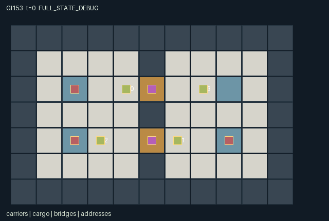

GI153 / SPATIAL
担保桥梁
互补包裹各有私人目的地，角色协商稀缺且会过期的过桥权，权衡收费和互助。
Original saved demonstration
Recorded native state, often authored scripts or interventions; information scope and failures are preserved in the original provenance. This is a saved demonstration, not live browser play.

Release verification episode
Untrained uniform legal actions. Actual JAX state sampled along the full original episode; full-state debug camera. No human performance or learning claim.

Run this game
crucibles play --game 153
Start Python locally, then open the address printed by the terminal. Installation, multiplayer, takeover and keyboard controls →
Objective, rewards & ending
Exact task contract
{
"objective": "Transport four complementary parcels to their bilateral private target depots by negotiating scarce expiring bridge access; choose toll revenue, prompt passage and reciprocal delivery assistance.",
"natural_termination": "Terminate when all four unique parcels have been delivered. Otherwise truncate at 160; undelivered demands remain explicitly unsatisfied.",
"interaction": "Each issuer must use the other bridge to cross; neither can issue itself a permit. A grant escrows a scarce real token and an action near a control point. Permits constrain entering the only river crossings. Toll quotes, expiry, physical congestion and complementary recipient rewards create cross-agent opportunities and costs.",
"observation_access": "Public terrain and contract board includes wallets, requests, quotes, permit lifetimes, grants, expiries and receipts. Moving agents and active parcels have Manhattan-radius-3 visibility without wall occlusion. Each random delivery address is visible only to its original sender, named recipient and current carrier. Full-state debug views must be labeled separately."
}Declared per-step reward bounds: -0.1 to 2. Observability: partially_observable.
Rules
- North issuer is agent 0; south issuer is agent 1. Issuers cannot request their own bridge.
- Requests are posted from a bridge approach, lock the old advertised toll, last four ticks and become grantable next tick.
- At a nearby control point, an issuer can bond one token to grant a six-tick permit to a pending requester.
- Entering a bridge consumes that permit, charges its quote and refunds the issuer bond. Unused expiry also refunds the bond.
- The sum of all wallets and bridge bonds stays eight; changing a posted toll cannot change an existing quote.
- A carrier already on a bridge may exit even if its permit is gone; backing out does not refund a used toll.
- Each parcel has a distinct recipient; its private target row is sampled from the supplied reset key and revealed to sender, recipient and carrier.
- Only adjacent empty carriers accept hand-offs; parcel identity and recipient persist.
- Delivery rewards carrier +0.5, sender +0.25 and recipient +1; toll utility is a zero-sum 0.05 per token; every live step costs 0.001.
- All four deliveries end naturally; otherwise the horizon is 160.
Original mechanism document (historical status wording retained)
# Bonded Bridges **AUTHOR_ONLY_NOT_EXECUTED.** This is initial parentless proposal 153, source attempt 0, in the frozen train-only window. Candidate runtime execution, numerical R0, replay, rendered animation, learning and scientific acceptance have not occurred in this authoring task. Python AST/syntax and declarative data-shape/schema screens are authoring checks only; they do not establish any game outcome. Native contract: A=4, O=182, U=14, H=160. Observations are float32 `[A,O]`, actions int32 `[A]`, rewards float32 `[A]`, masks bool `[A,U]`, and state leaves are fixed-shape int32/bool arrays. Source SHA-256: `e9d1a6de2281874cecfbf6b2f2ce57605925694d281ce97040c40634e54779c6`. ## Task and rules Transport four complementary parcels to their bilateral private target depots by negotiating scarce expiring bridge access; choose toll revenue, prompt passage and reciprocal delivery assistance. A river divides the world; the only traversable river cells are the two narrow bridges. North issuer 0 and south issuer 1 each transport a parcel and also need the other issuer's bridge for their own crossing. Merchants 2 and 3 can request either route. This embeds reciprocal access in reachable spatial opportunities rather than attaching decorative contracts to unrelated movement. A request at an approach locks the currently advertised toll and lasts four ticks. A grant reads the prior step's public requests, takes an issuer action near its control point, locks one issuer token in escrow and names one beneficiary for six ticks. An issuer cannot grant itself. Contending requests are chosen by rotating agent priority. A last-tick permit may still be used before timers decay. Once a beneficiary enters, its quote is paid to the issuer and the issuer's bond returns; entry consumes the permit. A carrier can subsequently leave or retreat without being trapped by expiry, and a used toll is not refunded for retreat. An unused expired permit returns the bond. New requests are recorded after grants, and simultaneous toll changes affect subsequent quotes rather than rewriting a submitted request. Issuing a permit ties up a token, consumes a turn and requires the issuer near its control point. While an issuer is transporting its own parcel away from that point, new passage requests may wait. A toll-seeking strategy trades access for future purchasing power; a free-access strategy may obtain reciprocal service sooner. Issuers may coordinate by moving one cell toward their own controls to grant each other's requests and then returning to the foreign bridge. Merchants can choose routes, wait, or carry another role's parcel after a hand-off. These are prospective partner-dependent strategies, not tested outcomes. Four immutable parcel types have cyclic recipients [1,2,3,0]. Every reset independently samples each parcel's target row as 2 or 4 from the supplied key; its opposite-bank x coordinate is fixed. The sender, recipient and present carrier know that address; others see only public possible depot locations. Cargo does not respawn, hand-offs cannot duplicate it, and each recipient can be fulfilled exactly once. Delivered cargo remains accounted for but is inactive in rendering. A parcel label's type/recipient is fixed by id and is not extra hidden policy information. The intended token identity is `sum(wallet) + sum(bond) = 8`. Toll payments and bond deposits/refunds change ownership but create no tokens. Permits have one slot per bridge; request lifetime is at most four and permit lifetime at most six. Wallets remain nonnegative under legal moves. Private addresses and local carrier positions bind to actual role visibility. Rule variants could change bridge/control layout, permit duration, toll options or recipient cycles; only sampled target rows vary in this implementation, and no adaptation claim follows from that fact. ## Actions and simultaneous timing - `0`: Wait. - `1`: Move north. - `2`: Move east. - `3`: Move south. - `4`: Move west. - `5`: Request north bridge at its approach; quote current toll. - `6`: Request south bridge at its approach; quote current toll. - `7`: As issuer, grant one prior request at own control point and escrow one token. - `8`: As issuer, toggle advertised own-bridge toll between zero and one. - `9`: Hand carried parcel to adjacent empty agent 0. - `10`: Hand carried parcel to adjacent empty agent 1. - `11`: Hand carried parcel to adjacent empty agent 2. - `12`: Hand carried parcel to adjacent empty agent 3. - `13`: Attempt delivery of held parcel at its private target. Movement rejects another agent's start-of-tick cell even if that agent moves; swaps are blocked. Among proposals to the same empty cell, the smallest (agent_id - t) mod A wins. Terrain or joint contention may make a legal movement attempt stationary. Out-of-range or masked actions deterministically become action 0. Legal interaction attempts may still do nothing when their resolution-phase prerequisites are absent; the action labels state their intended operation. All roles remain active until joint termination, so no eliminated role is silently deleted. Terminal masks retain action 0. ## Observation and renderer contract Public terrain and contract board includes wallets, requests, quotes, permit lifetimes, grants, expiries and receipts. Moving agents and active parcels have Manhattan-radius-3 visibility without wall occlusion. Each random delivery address is visible only to its original sender, named recipient and current carrier. Full-state debug views must be labeled separately. - Columns `0:7` (self): Own x,y,id,carried parcel id,received count,clock,joint done. - Columns `7:53` (public): Contract board: wallets[4]; request triples gate,ttl,quote for four agents[12]; bridge records x,y,beneficiary,ttl,advertised toll,locked price,bond[14]; delivery flags[4],crossing flags[4],grant flags[2],expiry flags[2],received counts[4]. - Columns `53:73` (local): Four agent records: x,y,carried parcel,in-transit bridge,visible. Radius 3 without wall occlusion; hidden fields -1. - Columns `73:93` (local): Four parcel records: x,y,carrier,active,visible. Active parcels within radius 3; immutable type equals record id and recipients are [1,2,3,0]. - Columns `93:105` (local): Four private address records: x,y,visible. Known to original sender, named recipient and current carrier; otherwise -1. Delivered target becomes inactive and hidden. - Columns `105:182` (public): Static 7 by 11 public tile map, row-major yx. All coordinates are integer `[x,y]`; the tile map uses `[y,x]` indexing and a downward y axis. `scene.json` binds these actual map, position, active, visibility, attribute and event paths. It contains no invented motion, external image, executable markup or policy-only information. Public event channels are also present in observations. Counters and persistent levels are labeled separately from per-step events. Full-state inspection must be distinguished from role-visible playback. A real trajectory and its animation remain to be produced by the trusted implementation process. ## Termination, rewards and conservation Terminate when all four unique parcels have been delivered. Otherwise truncate at 160; undelivered demands remain explicitly unsatisfied. A nonterminal call advances the int32 clock once. Natural completion takes precedence over the horizon. Terminal raw calls preserve every leaf, observation and clock, return zero rewards and all dones true, and preserve terminated/truncated. No episode reset occurs in raw_step. Declared finite observation bounds are -1..160; reward bounds are -0.1..2. These are game data bounds, not outcome thresholds. Rule-specific reward terms and conservation claims above are literal source design claims; they remain untested numerically. `manifest.json` declares every state leaf and safe structural invariants; source-dependent accounting identities require independent execution review. ## Source-line evidence - Bilateral address and local entity visibility: `candidate.py:12` — `def refresh(self, s):` - Explicit-key private demand sampling: `candidate.py:34` — `target_y = jnp.where(jax.random.bernoulli(key,0.5,(4,)),2,4).astype(jnp.int32)` - Permits constrain movement masks: `candidate.py:61` — `def legal_actions(self, s):` - Actual bridge occupancy and toll transfer: `candidate.py:113` — `# Entering consumes one permit and transfers its quoted toll; escrow returns to issuer.` - Refund and expiry: `candidate.py:123` — `# Last-tick permits were usable above. Unused expiring bonds are now refunded.` - Bonded delayed grants: `candidate.py:132` — `# Grants read the previous public requests, require a real control-point visit and bond.` - Quote locking and request lifetime: `candidate.py:148` — `# Requests posted now are actionable next tick and lock the old advertised price.` - Parcel-preserving hand-offs: `candidate.py:157` — `# Hand-offs preserve parcel identity, recipient and private delivery address.` - Complementary delivery rewards: `candidate.py:166` — `for p in range(4):` - Public versus role-specific observation construction: `candidate.py:187` — `def observe(self, s):` ## Prospective playthroughs and single-action interventions `playthrough.json` contains literal source-derived scripts and paired branches that change exactly one role action at one decision. Each script is explicitly `UNEXECUTED_AUTHOR_HYPOTHESIS`; its action dimensions and ranges were checked as data, while runtime legality, actual trajectories, numerical parity and success were not checked. No script result, score, learning gain or browser acceptance is invented. The paired hypotheses identify state paths for later comparison and do not substitute for measured causal traces. ## Community interface and provenance The supplied official JaxMARL README informed the separation between the homogeneous array kernel and a later agent-keyed parallel API with `__all__`; no upstream environment was copied. Pgx informed explicit legality, raw terminal state and explicit-key provenance, rather than importing a board-game implementation. Craftax supplied a reference for spatial objects, inventories and persistent consequences; this game is an original multiplayer design. PureJaxRL is an algorithm implementation reference, not a game library. The supplied Craftax recurrent PPO baseline credits PureJaxRL; its training/network/wrapper code was not copied, run or substituted for the frozen learner. Reference snapshots are hash-frozen in `author_input_freeze.json` and the assigned request: [JaxMARL README](https://github.com/bold-lab-ai/JaxMARL/blob/main/README.md), [Pgx README](https://github.com/sotetsuk/pgx/blob/main/README.md), [Craftax README](https://github.com/MichaelTMatthews/Craftax/blob/main/README.md), [PureJaxRL README](https://github.com/luchris429/purejaxrl/blob/main/README.md), and [Craftax recurrent PPO baseline](https://github.com/MichaelTMatthews/Craftax_Baselines/blob/main/ppo_rnn.py). API/design ideas only; copied upstream code: none. The public JaxMARL adapter belongs to the trusted integration layer: it should map fixed ids `agent_0` through `agent_3` to the existing array boundary, expose masks and set done `__all__` from `done_all`. No agent dictionary adapter or new learner is smuggled into this restricted one-class kernel. Source integer categories use int32, flags use bool, and the supplied uint32 reset key is external provenance rather than a hidden mutable state object. The source/manifest/scene hashes are bound in `generation_record.json`; `author_input_freeze.json` binds the verified frozen author inputs. No prior candidate, result, replay, rank, training feedback or final-test material was read. No numeric candidate execution, CSD3 operation, model download or background task was performed. Initial-window accounting remains four parentless proposals 150..153, 154 used or reserved of the existing 512 cap, with later windows unchanged. Authoring and visualization support alone do not establish learnability, non-isomorphism, generalization or meta-learning.
Commands
Roles & abilities
agent_0 North bridge issuer and west-bank carrier; own travel needs south permission
agent_1 South bridge issuer and east-bank carrier; own travel needs north permission
agent_2 West-bank merchant carrying complementary cargo for agent 3
agent_3 East-bank merchant carrying complementary cargo for agent 0
Observation permissions
Training receives only the original observation rows. Role cameras use declared visibility; debug cameras are explicitly marked. Local benchmark records log debug exposure and role takeover history.
Exact observation layout
[
{
"slice": [
0,
7
],
"visibility": "self",
"meaning": "Own x,y,id,carried parcel id,received count,clock,joint done."
},
{
"slice": [
7,
53
],
"visibility": "public",
"meaning": "Contract board: wallets[4]; request triples gate,ttl,quote for four agents[12]; bridge records x,y,beneficiary,ttl,advertised toll,locked price,bond[14]; delivery flags[4],crossing flags[4],grant flags[2],expiry flags[2],received counts[4]."
},
{
"slice": [
53,
73
],
"visibility": "local",
"meaning": "Four agent records: x,y,carried parcel,in-transit bridge,visible. Radius 3 without wall occlusion; hidden fields -1."
},
{
"slice": [
73,
93
],
"visibility": "local",
"meaning": "Four parcel records: x,y,carrier,active,visible. Active parcels within radius 3; immutable type equals record id and recipients are [1,2,3,0]."
},
{
"slice": [
93,
105
],
"visibility": "local",
"meaning": "Four private address records: x,y,visible. Known to original sender, named recipient and current carrier; otherwise -1. Delivered target becomes inactive and hidden."
},
{
"slice": [
105,
182
],
"visibility": "public",
"meaning": "Static 7 by 11 public tile map, row-major yx."
}
]Entity visibility & attributes
[
{
"id": "carriers",
"kind": "agent",
"count": 4,
"position": [
"agent_pos"
],
"active": [
"agent_active"
],
"visibility": [
"agent_visible"
],
"attributes": [
{
"state_path": [
"carrying"
],
"meaning": "Parcel id carried; -1 means empty",
"display": "category"
},
{
"state_path": [
"wallet"
],
"meaning": "Token balance; public on contract board",
"display": "number"
},
{
"state_path": [
"in_transit"
],
"meaning": "Bridge entered, or -1 when on a bank",
"display": "category"
}
]
},
{
"id": "cargo",
"kind": "object",
"count": 4,
"position": [
"cargo_pos"
],
"active": [
"cargo_active"
],
"visibility": [
"cargo_visible"
],
"attributes": [
{
"state_path": [
"cargo_type"
],
"meaning": "Complementary cargo type equals immutable parcel id",
"display": "category"
},
{
"state_path": [
"cargo_carrier"
],
"meaning": "Current carrier, or -1 when delivered",
"display": "category"
},
{
"state_path": [
"recipient"
],
"meaning": "Agent whose complementary demand this parcel fulfills",
"display": "category"
}
]
},
{
"id": "bridges",
"kind": "gate",
"count": 2,
"position": [
"gate_pos"
],
"active": [
"gate_active"
],
"visibility": [
"gate_visible"
],
"attributes": [
{
"state_path": [
"gate_owner"
],
"meaning": "Issuer: north 0, south 1",
"display": "category"
},
{
"state_path": [
"toll"
],
"meaning": "Advertised toll for new requests",
"display": "number"
},
{
"state_path": [
"beneficiary"
],
"meaning": "Role with the current permit, or -1",
"display": "category"
},
{
"state_path": [
"permit_ttl"
],
"meaning": "Remaining permit lifetime",
"display": "bar"
},
{
"state_path": [
"permit_price"
],
"meaning": "Quoted toll locked into the current or last permit",
"display": "number"
},
{
"state_path": [
"bond"
],
"meaning": "Issuer token currently held in escrow",
"display": "number"
}
]
},
{
"id": "addresses",
"kind": "landmark",
"count": 4,
"position": [
"target_pos"
],
"active": [
"target_active"
],
"visibility": [
"target_visible"
],
"attributes": [
{
"state_path": [
"recipient"
],
"meaning": "Receiving agent for this bilateral private delivery contract",
"display": "category"
}
]
}
]Actual verification & provenance
Per-game execution receipt
{
"game": "gi153",
"status": "PASS",
"verification_revision": 2,
"source_sha256": "e9d1a6de2281874cecfbf6b2f2ce57605925694d281ce97040c40634e54779c6",
"seed": 20261101,
"runtime": {
"jax": "0.4.38",
"numpy": "1.26.4",
"devices": [
"TFRT_CPU_0"
]
},
"dimensions": {
"num_agents": 4,
"observation_size": 182,
"num_actions": 14,
"max_steps": 160
},
"checks": {
"eager_reset": {
"status": "PASS",
"seconds": 1.4315862655639648
},
"observation_spaces_legal_masks": {
"status": "PASS",
"seconds": 1.3200054168701172
},
"eager_step": {
"status": "PASS",
"seconds": 2.96366548538208
},
"jit_reset": {
"status": "PASS",
"seconds": 0.30405116081237793
},
"jit_step": {
"status": "PASS",
"seconds": 1.8825030326843262
},
"eager_jit_integer_parity_float_measurement": {
"status": "PASS",
"seconds": 0.0005044937133789062
},
"jit_vmap_reset": {
"status": "PASS",
"seconds": 0.5351617336273193
},
"jit_vmap_step": {
"status": "PASS",
"seconds": 3.7637107372283936
},
"outer_autoreset_api": {
"status": "PASS",
"seconds": 2.5556628704071045
},
"full_original_horizon_episode_and_render": {
"status": "PASS",
"seconds": 1.9730699062347412
}
},
"human_scores": null,
"browser_controls": "PENDING",
"failures": [],
"elapsed_seconds": 17.308321714401245,
"float_parity_max_abs": 0.0,
"numerical_parity": "EXACT",
"raw_terminal_absorbing": "PASS",
"terminal_outer_reset": "PASS",
"episode_steps": 160,
"scripted_random_returns": [
-0.1600000075995922,
-0.1600000075995922,
-0.1600000075995922,
-0.1600000075995922
],
"terminal": true,
"demo_information": "FULL_STATE_DEBUG",
"demo_frames": 28,
"render_roles_checked": 4
}Chromium control verification
{
"game": "gi153",
"status": "PASS",
"human_scores": null,
"engineering": true,
"checks": [
"catalog_selected_and_real_native_reset",
"dom_queue_and_native_step",
"second_participant_ownership_and_native_joint_step",
"all_roles_individually_controllable_no_role_cap",
"explicit_debug_camera",
"release_to_pure_ai_without_reset"
],
"seconds": 5.188789367675781
}Original identity and file hashes
{
"id": 153,
"key": "gi153",
"title": "担保桥梁",
"summary": "互补包裹各有私人目的地，角色协商稀缺且会过期的过桥权，权衡收费和互助。",
"tags": [
"通行协商",
"互补配送"
],
"family": "spatial",
"dimensions": {
"num_agents": 4,
"observation_size": 182,
"num_actions": 14,
"max_steps": 160
},
"source_sha256": "e9d1a6de2281874cecfbf6b2f2ce57605925694d281ce97040c40634e54779c6",
"manifest_sha256": "887f4abd209f545aea0dd1a7a765186732de79fc13c589c3ffbd433006dfd1d2",
"files": [
{
"file": "candidate.py",
"sha256": "e9d1a6de2281874cecfbf6b2f2ce57605925694d281ce97040c40634e54779c6",
"bytes": 14240,
"origin": "work/exp_2/game_incubator_v3/community_games222_225_visualization_root222_v1/native154_candidate/registry/v2/games/game-v3-00153/candidate.py"
},
{
"file": "manifest.json",
"sha256": "887f4abd209f545aea0dd1a7a765186732de79fc13c589c3ffbd433006dfd1d2",
"bytes": 15751,
"origin": "work/exp_2/game_incubator_v3/community_games222_225_visualization_root222_v1/native154_candidate/registry/v2/games/game-v3-00153/manifest.json"
},
{
"file": "scene.json",
"sha256": "70e03a7f17f2a4d3a15a279678051df1b597b3b747957812eebd36e049e6d1b4",
"bytes": 8386,
"origin": "work/exp_2/game_incubator_v3/community_games222_225_visualization_root222_v1/native154_candidate/registry/v2/games/game-v3-00153/scene.json"
},
{
"file": "mechanism.md",
"sha256": "4e4acda6df819870d6bfc474f85dc6255addc916cc48adcd9318e99ae5e99308",
"bytes": 12129,
"origin": "work/exp_2/game_incubator_v3/sources/game-v3-00153/attempt_00/mechanism.md"
},
{
"file": "playthrough.json",
"sha256": "d36435b924118d9c7bef3883c5be9038b45b52e322d1df8890316ba081c12291",
"bytes": 5691,
"origin": "work/exp_2/game_incubator_v3/sources/game-v3-00153/attempt_00/playthrough.json"
}
],
"original_status": "NATIVE154_REFERENCE",
"original_saved_replay": true,
"release_validation": "PASS",
"human_scores": null,
"browser_validation": "PASS"
}